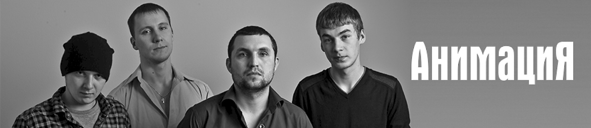

Биография «Анимация» — российская рок-группа, в 2013 году получившая музыкальную премию «Чартова дюжина» в номинации «Взлом». Широко известна команда благодаря саундтрекам ко многим популярным фильмам. Коллектив играет песни в стилях альтернативный рок, фолк-рок и хард-рок. История создания и состав История создания группы «Анимация» началась в 2000 году в Чистополе (Татарстан) благодаря объединению Артема Карпова и Константина Кулясова. Первый играл на ударных и губной гармонике, а второй отвечал за вокал и гитару. Позже к ним присоединились еще несколько человек. В первые 2 года существования коллектива состав неоднократно менялся. Первый студийный альбом «Странник» коллектив записал в 2008 году, однако он не получил широкого распространения. В 2009-м состоялся интернет-релиз диска «Помехи в эфире», но он также не стал популярным. Настоящий прорыв «Анимации» произошел в 2012 году после выхода знаменитого альбома «Время Ё». Песня «Родина» попала на ряд популярных радиостанций и прозвучала на телевидении. Композиция стала известной не только в России, но и в странах СНГ. Динамичный трек понравился слушателям настолько, что прозвучал в нескольких КВН-пародиях и был использован участником телешоу «Танцы» на ТНТ Митей Стаевым для номера.

Логотип Группы АнимациЯ
Родина
Спички
Черта
Журавли
Штуки
Однажды
Танцевать
Утопаем
Ошибки
Псих